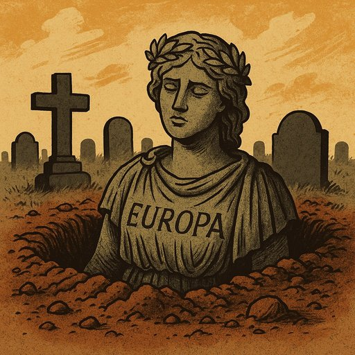

Publicado em 2025-07-01 19:05:49
Por Augustus Veritas & Francisco Gonçalves
Dizem que a Europa morreu.
Que sucumbiu aos escombros da História, às cinzas das suas guerras, à poeira dourada dos impérios desfeitos.
Mas a verdade é mais sinistra: a Europa não morreu — está mal enterrada.
Enterrada sob camadas de relatórios em PDF, de reuniões infindáveis com nomes pomposos e conclusões ocamente unânimes.
Sepultada sob o peso de tratados que já ninguém lê, mas todos invocam, como padres recitando latinórios de uma missa sem fé.
Nas avenidas de Bruxelas passeiam-se os fantasmas da ideia europeia:
liberdade, solidariedade, cultura, dignidade humana.
Hoje, arrastam correntes de compliance, manuais de boas práticas e um exército de “consultores” pagos a peso de dívida pública.
Enquanto isso, os tanques destroem cidades no Leste, os barcos afundam-se no Sul, e a miséria alastra no interior esquecido do Velho Mundo.
Macron conversa com Putin, mas ouve-se mais o silêncio de Chamberlain.
Montenegro esconde rendimentos, como se Portugal fosse o seu quintal de cortiça.
Os líderes europeus sorriem nas cimeiras, mas tremem perante as urnas —
não por respeito ao voto, mas por medo de perderem o poder que os afasta dos povos.
A Ucrânia arde.
O povo geme.
Os burocratas adormecem ao som do tilintar de copos nas receções da Comissão.
A Europa devia ser um farol —
é hoje um candeeiro de escritório tremelicando num cubículo mal iluminado.
… ainda assim, algo pulsa sob as pedras tumulares.
Um verso rebelde em Atenas.
Um protesto em Varsóvia.
Um poeta em Lisboa que ainda escreve com o coração e a memória dos seus.
A Europa não está morta.
Está mal enterrada.Enterrem-na melhor ou deixem-na levantar-se.
Porque um continente que deixou Auschwitz e lançou Galileo,
que viu Dante e Da Vinci,
merece mais do que este sono de granito.